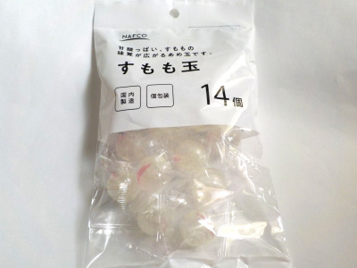

中原製菓のすもも玉
2023/07/10

すもも味のみの飴って珍しいと思い買いました。
スモモ味がほんのりだなと思い原材料を確認したら、スモモが書いてありませんでした。
スモモ入ってないけど、スモモ味がするって凄いな。酸味料と香料でスモモっぽくなるんでしょうね。
スモモ味ってなんか不思議な味ですね。まあ、シンプルな甘さで美味しいからいいんですけど。
佐賀県佐賀市巨勢町大字牛島565-1
2023/07/10

すもも味のみの飴って珍しいと思い買いました。
スモモ味がほんのりだなと思い原材料を確認したら、スモモが書いてありませんでした。
スモモ入ってないけど、スモモ味がするって凄いな。酸味料と香料でスモモっぽくなるんでしょうね。
スモモ味ってなんか不思議な味ですね。まあ、シンプルな甘さで美味しいからいいんですけど。